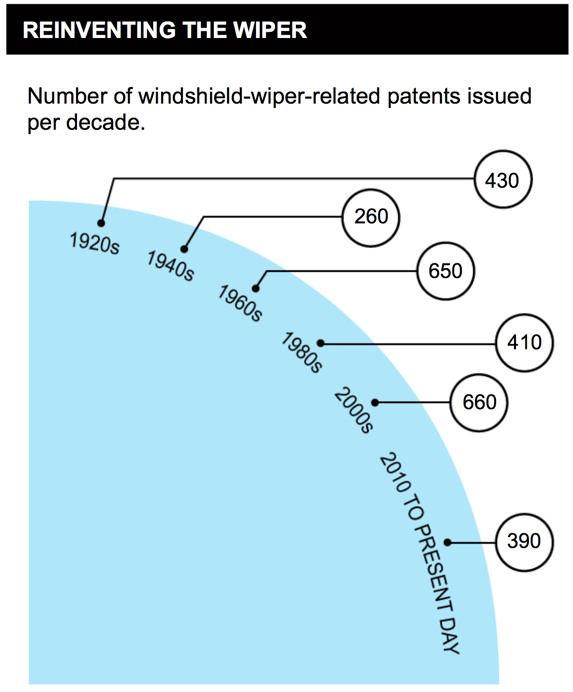

Si consideri il seguente grafico preso da un articolo del NYT (del 12 Settembre 2014).
Il grafico riporta il numero di brevetti rilasciati in diversi periodi relativamente ai tergicristalli.
Analisi
Analizzare il grafico sopra riportato secondo gli aspetti seguenti:Question:- è stata definita chiaramente una domanda (o più di una) a cui la visualizzazione risponde?
Il grafico risponde alla domanda: qual è l'evoluzione del numero di brevetti legati ai tergicristalli negli anni?
Data:- i dati mostrati sono validi e supportano la domanda?
I dati presentano due problemi:
- il sotto-titolo parla di decadi ma l'intervallo tra il primo valore (riferito a 1920s) ed il secondo (riferito a 1940s) apparentemente è di 20 anni;
- l'ultimo periodo è pari a quasi 5 anni, dal 2010 a Settembre 2014.
Sono possibili due interpretazioni relativamente al primo problema:
- Ci sono alcune decadi mancanti (1930, 1950, 1970, 1990)
- I dati si riferiscono a intervalli non uniformi: 20 anni per i primi quattro valori, 10 anni per il quinto e circa 5 anni per l'ultimo.
In ogni caso i dati non sono direttamente confrontabili.
Visual:le caratteristiche visuali sono usate appropriatamente?
Riguardo gli aspetti visuali si valuti l’integrità visuale secondo i tre aspetti:
Proportionality:- le misure sono riportate in maniera uniformemente proporzionale?
Il grafico riporta due misure:
- Il numero di brevetti: che è rappresentanto solo in maniera testuale e non da alcun attributo visivo.
- Il periodo di riferimento, riportato sulla curva del quarto di cerchio, in maniera assolutamente non proporzionale.
Utility:- tutti gli elementi presenti nel grafico trasmettono informazioni utili?
Il quarto di cerchio azzurro non svolge alcun ruolo, inoltre i cerchi che racchiudono i numeri di brevetti non hanno una specifica utilità, potrebbero essere omessi.
Clarity:- i dati del grafico sono chiaramente identificabili e comprensibili (opportunamente descritti)?
I dati sono leggibili e chiaramente collegati ai periodi.
Design
Riprogettare la visualizzazione in modo da risolvere i problemi evidenziati nell'analisi.
In particolare evidenziare come varia il numero di brevetti nel tempo.
Nell'ipotesi 1 (dati riferiti decadi) è opportuno trattare in maniera adeguata l'ultimo periodo che di fatto è una mezza decade.
Una possibilità è quella di rapportare l'ultimo valore (390) al periodo relativo: dal 2010 a settembre 2015 (la data dell'articolo), ovvero 4 anni e 9 mesi.
Il calcolo del valore stimato può essere svolto come:
$$ N_{norm} = N \cdot \frac{10}{4 + \frac{9}{12}} $$Nell'ipotesi 2 (dati riferiti a intervalli non uniformi) per poter rendere i dati confrontabili una soluzione è quella di riportare le medie annuali.
$$ \overline{N} = \frac{N}{Anno_{fine} - Anno_{inizio} + 1} $$
Inserire le risposte all'interno del presente file,
in particolare negli elementi <div>
che hanno come classe answer.